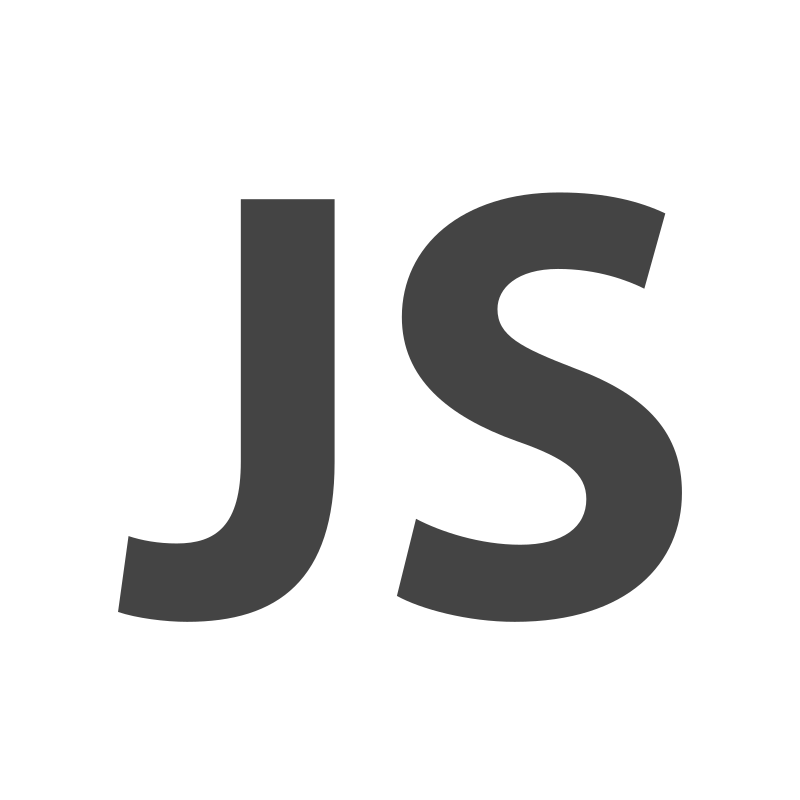
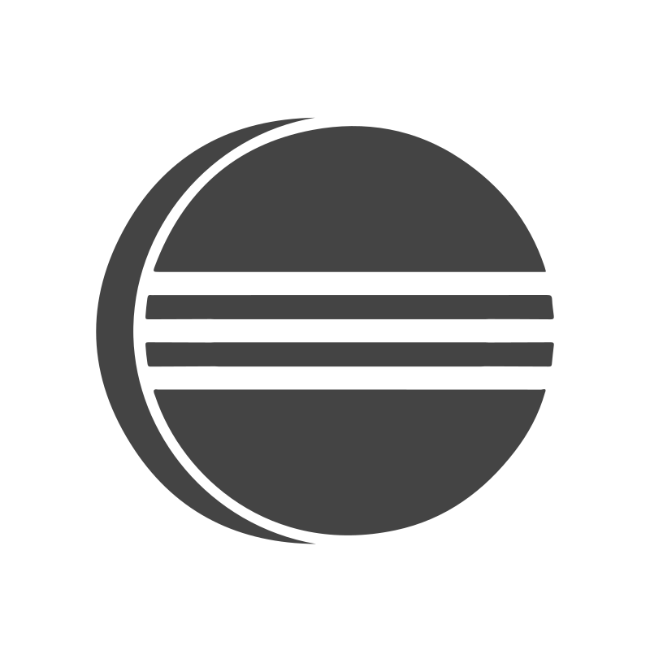
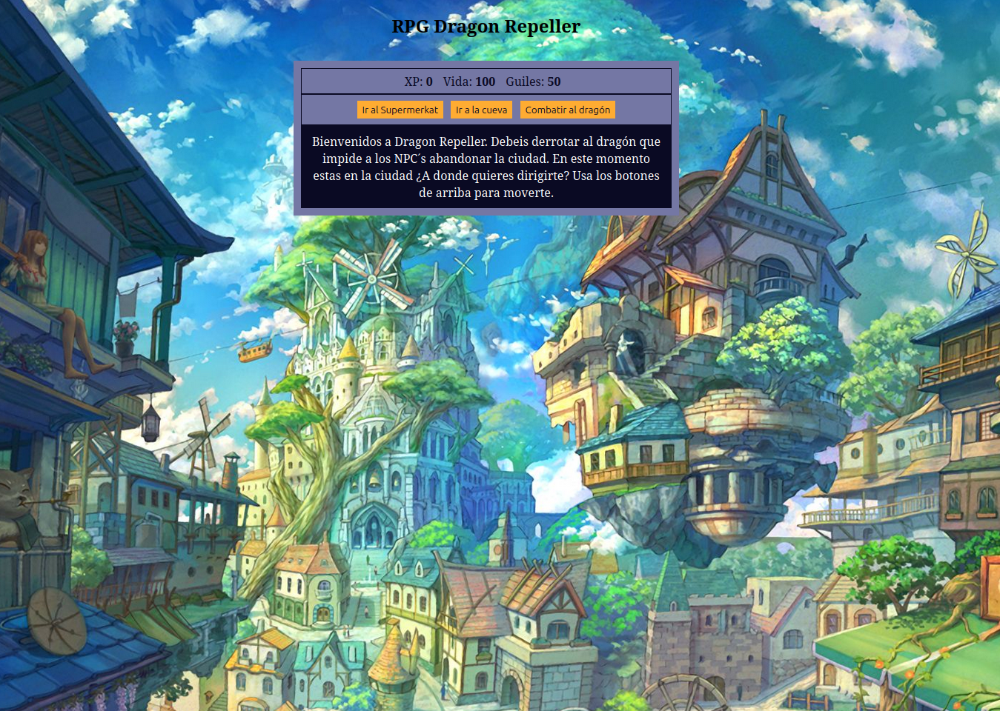
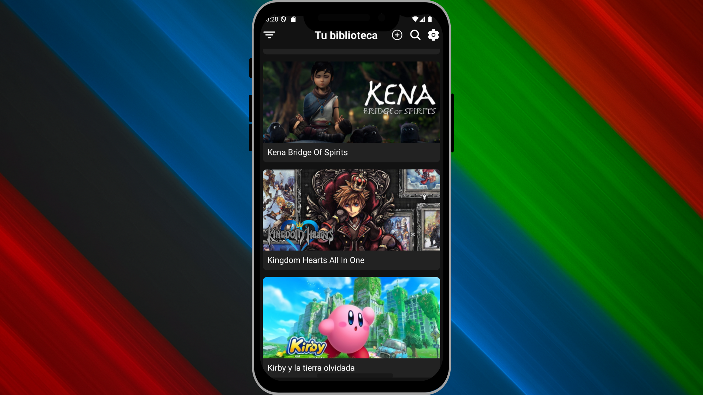
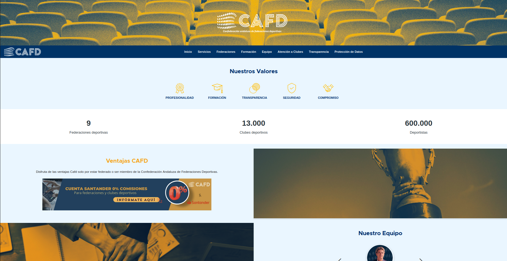

Sobre mí
Desde siempre me ha fascinado el mundo de la informática, pero no fue hasta hace poco que decidí apostar de lleno por ello. Esta decisión me llevó a completar el ciclo formativo de Desarrollo de Aplicaciones Multiplataforma (DAM), y con ello, abrir un nuevo capítulo profesional enfocado en lo que verdaderamente me apasiona: la programación.
Soy una persona perseverante, curiosa y con muchas ganas de seguir aprendiendo. Me motiva enfrentarme a retos y crecer en entornos colaborativos. Estoy buscando una oportunidad en el sector tech donde pueda aportar mis conocimientos, seguir desarrollándome como programador y formar parte de proyectos que marquen la diferencia.
Tecnologías
 Java
Java

JavaScript HTML CSS PHP C++ React Native
React Native
 MySQL
PhpMyAdmin
Node.js
MySQL
PhpMyAdmin
Node.js
 Visual Studio Code
Visual Studio Code

Eclipse Android Studio Drupal Docker GitHubExperiencia
Colaboré en la migración y rediseño de la web de la CAFD, pasando de WordPress a Drupal. Este proyecto me permitió aplicar lo aprendido, trabajar codo a codo con mis compañeros y entregar un producto funcional, moderno y sostenible.
Fecha: Marzo 2025 - Junio 2025
Formé parte del equipo de atención y soporte técnico en PcComponentes, gestionando incidencias relacionadas con hardware y componentes informáticos a través de distintos canales (tickets, chat y teléfono). Esta experiencia me permitió desarrollar una fuerte capacidad de análisis y diagnóstico técnico, comprender en profundidad el funcionamiento de sistemas y componentes, y mejorar mis habilidades de resolución de problemas en entornos reales.
Fecha: Noviembre 2025 - Febrero 2026
Proyectos

RPG Dragon Repeller
Aventura RPG de texto con exploración, combate y humor oculto.
Leer más ˅
Dragon Repeller es un sencillo juego RPG de texto en el que el jugador debe derrotar a un dragón que impide a los habitantes abandonar el pueblo. La aventura transcurre entre varios escenarios como la plaza principal, una tienda, una cueva y una arena de combate. El jugador puede desplazarse entre estas ubicaciones, comprar y vender armas, luchar contra monstruos y ganar experiencia y oro. El juego hace un seguimiento continuo de la salud, el oro y la experiencia del personaje, actualizando su estado en tiempo real. Además, incluye huevos de pascua ocultos que añaden un toque de humor al desarrollo. El objetivo final es vencer al dragón y liberar al pueblo.
El juego está desarrollado con HTML, CSS y JavaScript.
 Repositorio RPG Dragon Repeller
Demo
Repositorio RPG Dragon Repeller
Demo

GameShelf
Gestión inteligente y personal de colecciones de videojuegos desde tu móvil.
Leer más ˅
GameShelf es una aplicación móvil multiplataforma enfocada en la organización de bibliotecas personales de videojuegos. Desarrollada con React Native y Expo, permite a los usuarios registrar, buscar, filtrar y consultar información sobre juegos completados, en curso o por adquirir. La app se conecta a una base de datos MySQL gestionada a través de phpMyAdmin, lo que permite un control dinámico de la información.
Para su desarrollo, se emplearon tecnologías como JavaScript, TypeScript y Node.js, y se utilizó AsyncStorage para simular el almacenamiento de sesiones de usuario. El entorno de trabajo fue Visual Studio Code, y se testeo la aplicación en dispositivos reales con Expo Go. Gracias a XAMPP, se configuró un entorno local de pruebas que facilitó la integración entre frontend y backend.
Repositorio GameShelf

Migración y rediseño web de CAFD: De WordPress a Drupal
Proyecto de migración y rediseño de la web de la CAFD, pasando de WordPress a Drupal.
Leer más ˅
Durante mis prácticas formativas, tuve la oportunidad de integrarme en un equipo ágil y trabajar en un entorno real de desarrollo, donde pude:
🔴 Explorar y aplicar tecnologías como Drupal, PHP y Docker, ampliando significativamente mis conocimientos técnicos.
🔴 Fortalecer mis habilidades en Git y GitHub, participando activamente en flujos de trabajo colaborativos.
🔴 Sumergirme en la metodología Scrum, comprendiendo su dinámica y beneficios en proyectos reales.
En este desarrollo me centré especialmente en el backend, implementando funcionalidades y gestionando la lógica del servidor. Además, colaboré en el frontend, aplicando estilos específicos según las necesidades del diseño, y asumí la responsabilidad completa del apartado legal, desarrollando las secciones de Política de privacidad y Cookies conforme a la normativa vigente.
Repositorio Migración CAFD
Formación
Formación enfocada en el diseño, desarrollo y mantenimiento de aplicaciones multiplataforma, abarcando desde programación orientada a objetos hasta bases de datos y entornos web. Incluye prácticas profesionales en empresa con enfoque en desarrollo ágil y tecnologías actuales del sector.
Fecha: Octubre 2023 - Junio 2025